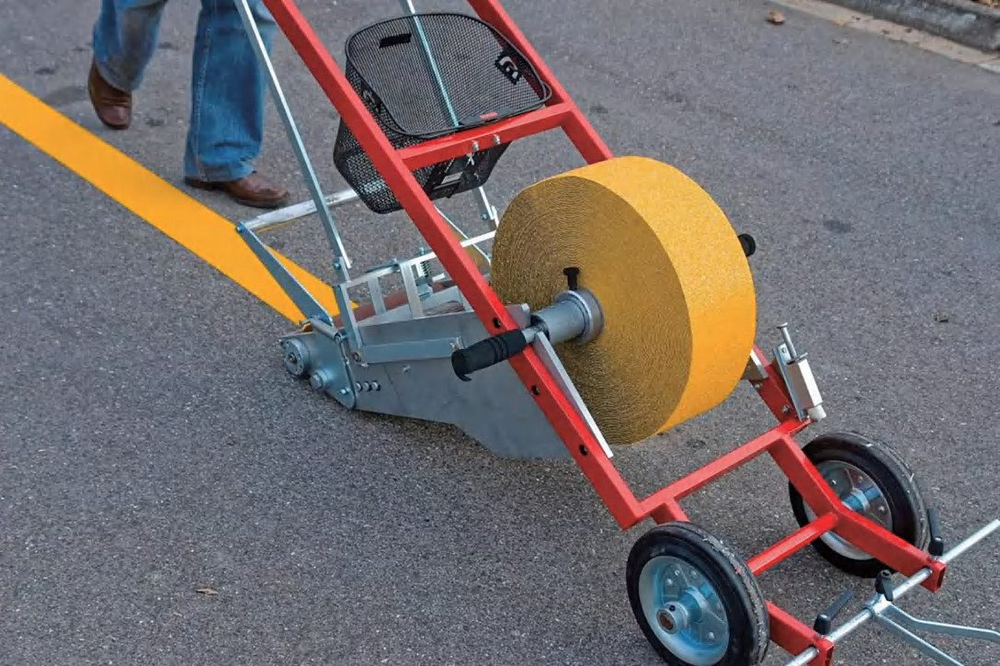

Hỏi đáp về rào chắn, băng dán sàn và an toàn kho xưởng
Những câu quản lý kho và HSE hay hỏi khi chuẩn bị làm rào, kẻ vạch hay đặt khảo sát. Mỗi câu trả lời ngắn, kèm đường dẫn tới trang chi tiết.
Rào chắn polymer
Rào polymer có cần sơn lại không?
Không. Hướng dẫn bảo trì của nhà sản xuất chỉ gồm lau sạch, kiểm bu lông và khớp nối theo lịch. Xem lịch bảo trì rào chắn polymer.
Rào polymer chịu được xe nâng nặng cỡ nào?
Mỗi mã rào có giới hạn riêng, tính bằng joule. Theo biên bản thử va đập, rào xe nâng 2 thanh DR148 định mức 13.500 J, rào 1 thanh SR148 và rào lối đi bộ 3 thanh TR148 định mức 10.200 J, ốp chân kệ RG142 định mức 1.000 J. Để dễ hình dung, 10.000 J tương đương xe nâng cộng hàng nặng 5 tấn chạy 7,2 km/h. Mã cụ thể chốt khi đo tại chỗ. Xem bảng kết quả thử va đập.
Có nên thay toàn bộ rào thép đang có?
Không cần. Giữ thép ở lối ít xe, đổi sang polymer ở đoạn bị va liên tục. Xem bài thép hay polymer.
Bãi đỗ xe nâng dùng gì để xe không lùi va tường?
Chặn bánh xe bắt xuống sàn ở cuối ô đỗ, thêm thanh chắn sàn sát tường nếu cần. Xem khu bãi đỗ và khu sạc.
Băng dán sàn
Băng kẻ vạch có chịu được xe nâng chạy qua không?
Chịu được ở đoạn xe chạy thẳng. Chỗ bánh xe xoay tại chỗ mòn nhanh hơn, cần xem tại chỗ. Xem băng kẻ vạch sàn.
Băng phản quang và băng dạ quang khác nhau thế nào?
Băng phản quang chỉ sáng khi có đèn chiếu vào. Băng dạ quang tự sáng một thời gian sau khi tắt đèn. Xem băng phản quang.
Dán băng có phải dừng xưởng không?
Không phải dừng lâu. Băng dán xong đi được ngay, chỉ cần quây đoạn đang dán. Xem cách dán băng cho bám.
Có bảng màu vạch sàn để làm theo không?
Có bảng màu theo thông lệ 5S, nhưng đó không phải quy định bắt buộc chung. Mỗi nhà máy tự chốt. Xem bảng màu vạch sàn nhà xưởng.
Xe nâng và lối đi bộ
Lối đi bộ trong kho nên rộng bao nhiêu?
Chưa có con số chung cho mọi kho. Bề rộng tuỳ số người đi cùng lúc, có xe đẩy hay không và nội quy nhà máy. Xem tách lối đi bộ và xe nâng.
Chỗ nào trong kho hay xảy ra va chạm?
Đầu dãy kệ, khúc cua, cột cạnh đường xe, cửa dock và điểm người cắt ngang đường xe. Xem 7 khu cần xử lý.
Gương cầu lồi có thay được rào ở khúc cua không?
Không. Gương giúp tài xế thấy người sớm hơn, nhưng không chặn được xe. Khúc cua có người qua lại vẫn cần rào hoặc cổng. Xem ba mức tách người khỏi xe nâng.
Xe nâng vừa quẹt chân kệ thì làm gì trước?
Báo người phụ trách kệ kiểm lại cả khoang kệ, không chất thêm hàng lên khoang đó khi chưa kiểm. Sau đó mới tính lắp ốp. Xem khu đầu dãy kệ.
Khảo sát và báo giá
Tôi có thể tự kiểm kho trước khi gọi không?
Có. Dùng checklist 10 điểm, đi một vòng kho trong ca, chụp ảnh những chỗ đã đánh dấu. Xem checklist tự kiểm kho.
Kho ở ngoài miền Bắc có được hỗ trợ không?
Khu vực khảo sát là Hà Nội và các tỉnh phía Bắc. Kho ở xa hơn thì gửi ảnh trước để trao đổi. Xem đặt khảo sát.
Thiên Khôi có nhận dán băng tại xưởng không?
Có. Thiên Khôi nhận dán băng tại xưởng sau khi xem nền sàn. Xem đặt khảo sát.
Vì sao web không đăng giá?
Giá phụ thuộc chiều dài, loại và cỡ ở từng khu, nên Thiên Khôi báo giá sau khi khảo sát. Xem đặt khảo sát.

Ba bước để kho của anh chị có đề xuất theo từng khu
Bắt đầu từ vài tấm ảnh chụp bằng điện thoại. Chúng tôi xem ảnh, gọi lại, rồi hẹn xuống kho đúng giờ ca đang chạy.
- 1Gửi ảnh vị trí
Chụp chỗ hay va hoặc hay trơn, ghi chiều dài ước lượng và loại xe chạy qua.
- 2Nhận gợi ý ban đầu
Thiên Khôi xem ảnh, gọi lại và gợi ý nhóm rào hoặc loại băng cho từng chỗ.
- 3Khảo sát tại chỗ
Hẹn đúng giờ ca đang chạy để đo, xem nền sàn, rồi gửi đề xuất cho từng khu.
Đã nhận yêu cầu
Bản mẫu: form này chưa gửi đi đâu. Trên web thật, Thiên Khôi gọi lại theo số anh chị để lại.